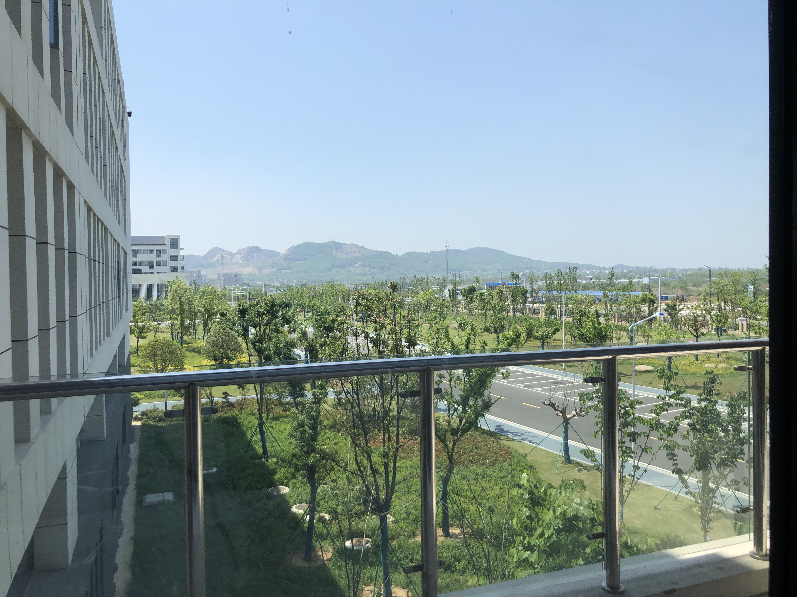

尤雨溪是出生于中国江苏省无锡市的程序员为 JavaScript编程语言 所使用Web应用框架 “Vue.js”的发起者和开发者
2005年尤雨溪前往美国念书，[1]在就读科尔盖特大学时， 尤雨溪主修的是工作室艺术和艺术史[5]。 到了快毕业的期间里，他意识到很难找到与本科相关的工作， 于是前往帕森斯设计学院，攻读美术设计和技术的硕士学位，
在那里他开始接触到多媒体设计工具库OpenFrameworks与编程语言JavaScript， 并学习编写应用程序和用户界面[5]。
在Google公司的实验性平台Chrome Experiments上线后，尤雨溪将 他以JavaScript 编写的作品提交上去后获得肯定，得到在Google任职的机会[5][6]
后续在2016年， 尤雨溪成立名为Vue Technology LLC的公司， 提供Vue.js方面的维护与开发处理[3]。在2020年期间，尤雨溪另推出能快速建置前端开发环境，适用于Vue.js、React的建置工具“Vite”[10]。